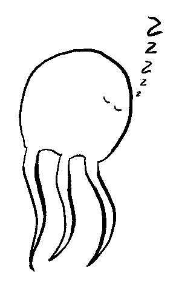

Hello! My name is Leonora and I wanted to make a personal site.
I wouldn't expect things to show up on here regularly, but I wanted a small corner of the internet to aggregate things I make and like.
Pages :
Social :
Acknowledgements